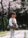
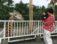
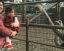

2000年4月29日12時07分撮影
めちゃくちゃハイになってる由起子。ちゃんと由起子用のシートベルト
(ママのシートベルトにくっつけるの)まであるのです。ビックリ！2000年4月23日14時56分撮影
飛鳥にある「甘樫の丘」のすそのに広がる‘菜の花畑’で。心地イイネェ。2000年4月10日21時18分撮影
ウィルス性の風邪と診断された発疹だらけの顔・身体・・・痛々しいよぉ。
2000年4月8日14時12分撮影
ポカポカ陽気で、桜もちょうど見頃でした。きれいだったねぇ。。。2000年4月8日13時04分撮影
安倍の文殊さんで「お花見」。ママの手作り弁当を食べました。2000年3月6日11時18分撮影
オーシャンドームではほとんど泣いていた由起子。
この時だけはニコニコ顔で入ってくれました。
2000年3月5日16時15分撮影
キリンチャーン、こんにちわ！あんまり近付くと怖くて泣いてしまいます。2000年3月5日16時04分撮影
音楽に合わせてゆっくり動くこの乗り物がお気に入りです。
2000年3月5日15時12分撮影
終始大興奮の動物園。このダチョウにリュックサックをつつかれた。2000年3月5日11時18分撮影
生駒高原で休憩タイム。アイスクリームがおいしかったねぇ。。。